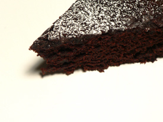

Amazon cake
I am on a perpetual quest for chocolaty desserts that are not too sweet, not hard or time-consuming to make, and that are delicious. I found another one tonight.

I should have looked on words to eat by earlier; it was Debbie who taught me to make perfect chocolate chip cookies many pounds of sugar and butter ago.
This cake turns out incredibly moist and fragrant, despite the utter lack of anything good in it. This cake is vegan, for crying out loud. But evidently the baking soda reacts with the water, vinegar, oil, and cocoa powder to achieve outstanding results, even on a first try.
Amazon cake
1.5 cups flour
1/3 cup unsweetened cocoa [I used Valrhona]
1 teaspoon baking soda
1 cup sugar
1/2 teaspoon salt
5 tablespoons corn or canola oil
1.5 teaspoons vanilla
1 tablespoon cider vinegar
Confectioners’ sugar
Heat the oven to 350ºF. Whisk together the flour, cocoa, baking soda, sugar, and salt. In a separate bowl, whisk together the oil, vanilla, and vinegar with 1 cup cold water. Whisk in the dry ingredients, blending until completely lump-free. Pour into a greased 9-inch round cake pan. Bake for 30 to 35 minutes, or until the top springs back when pressed gently. Cool before removing from the pan and dusting with confectioners’ sugar, or frosting if desired.
Addendum When I was in high school, my best friend was a British exchange student who didn’t eat meat or eggs. She was placed with a host family on my street because the family was vegetarian. This was extremely lucky, because the rest of the students in her program were placed way out in the suburbs. Anyway, the host father was a cook of some renown, and for my friend’s birthday he made a chocolate cake without eggs in it. We were all supposed to be so impressed. At the time, I knew nothing about baking, and it seemed like quite a feat to me. In retrospect, I realize that he probably made this incredibly easy cake! Or something similar. I have vivid memories of sitting around the table eating this cake and being expected to swoon over Howard’s culinary wizardry. Psshaa. I had this thing in the oven in about five minutes.
Comments
First visit, great food! If, by chance, you’re accepting links, check us out. we’ll link to you also. Thank you.
Vegan cakes are surprising delightful. We do a vegan cupcake everyday, and they inevitably sell out first.
We made this tonite. It was much loved by chocolate lovers who don’t love brownies. Tasted a little like a Dunkin’ Donuts chocolate cake donut, in a good, good way. We made it in a Bundt pan and had our slices with raspberry jam on them.
zp gave me an idea with her raspberry jam – for a really quick black forest cake make this in a bundt pan like she did, slice in two layers and fill with cherry preserves. Top with whipped cream.
Add a comment